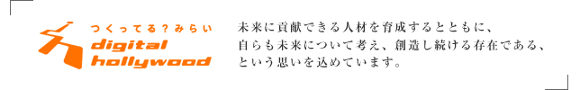

ブランドビジョン

社会や学生、顧客に提供する価値
独自のノウハウで社会に貢献できる人材を輩出します。
デジタルコミュニケーションで地域・社会の問題を解決します。
問題解決を行うためのプラットフォームを提供します。
すべてがデジタルで満たされている現在。
グローバルにコミュニケーションできる環境が整い、
国や文化を越えた価値観の共有は産業構造だけではなく社会全体を大きく変化させました。
このような環境の中、自分らしい生き方を実現するためのワークスタイルを
一人ひとりが自由に選択する時代を迎えつつあります。
私たちデジタルハリウッドは、変化する時代においても自分らしく生き抜く人間力を有し、
社会に貢献出来る人材を独自のノウハウで育成してまいります。
さらに、新しい価値を生み出すために欠かせない“人と人とのつながり”を大切にしていくことをお約束します。
ブランド戦略
山路やまみちを登りながら、こう考えた。 智ちに働けば角かどが立つ。情じょうに棹さおさせば流される。意地を通とおせば窮屈きゅうくつだ。とかくに人の世は住みにくい。 住みにくさが高こうじると、安い所へ引き越したくなる。どこへ越しても住みにくいと悟さとった時、詩が生れて、画えが出来る。 人の世を作ったものは神でもなければ鬼でもない。やはり向う三軒両隣りょうどなりにちらちらするただの人である。ただの人が作った人の世が住みにくいからとて、越す国はあるまい。あれば人でなしの国へ行くばかりだ。人でなしの国は人の世よりもなお住みにくかろう。 越す事のならぬ世が住みにくければ、住みにくい所をどれほどか、寛容くつろげて、束つかの間まの命を、束の間でも住みよくせねばならぬ。ここに詩人という天職が出来て、ここに画家という使命が降くだる。あらゆる芸術の士は人の世を長閑のどかにし、人の心を豊かにするが故ゆえに尊たっとい。